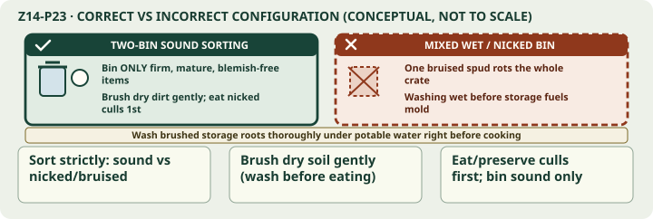

Z14-P23 · Food production and preservation · New manuscript
Cull bruised, nicked, or blemished produce before long-term storage
Prevent a single damaged root or squash from rotting an entire winter storage crate.
When it applies · Sorting potatoes, carrots, onions, garlic, apples, and winter squash prior to curing and cold storage.
Equipment · Clean sorting table, two distinct crate sets ("Eat/Preserve Now" vs "Long-Term Storage"), and soft dry brush.

Actions
- Inspect EVERY storage vegetable carefully before curing or binning: sort out any item with shovel nicks, insect holes, soft spots, frost-bite glassiness, split skins, or missing squash stems into a separate USE FIRST basket for immediate cooking or preservation.[P04]
- Brush loose dry garden dirt gently off storage potatoes, onions, and winter squash rather than washing them wet before storage (excess surface moisture invites fungal rot; wash thoroughly under running potable water right before cooking!).[P04, P16]
- Store ONLY sound, firm, mature, blemish-free produce in long-term winter crates, labeling each bin with harvest date and variety.[P04, P05]
Failure recognition · Tossing two shovel-sliced potatoes and one bruised apple into the bottom of a 50-pound winter cellar bin where soft rot liquefies half the crop by December.[P04]
Verify · Confirm strict two-bin sorting (sound storage vs immediate use), dry gentle soil brushing, and dated crate labels.[P04]
Stop or change course · Any produce showing slimy bacterial soft rot, sour odor, or mold must be culled immediately away from sound bins.[P04]
Evidence and editorial notes
- P04 · University of Minnesota Extension · Harvesting and Storing Home Garden Vegetables (current web edition)
- Section: Harvesting Maturity, Curing, and Post-Harvest Handling · Conditions: Home garden root crops, winter squash, onions, potatoes, and greens
Support: Harvest crops at proper maturity during cool morning hours without bruising, cure storage crops (onions, garlic, winter squash, potatoes) at crop-specific warm/dry conditions before cold storage, and cull any nicked or diseased items for immediate use.
Limitations: A single bruised or rotting vegetable spreads decay rapidly across an entire storage bin. · Conflicting evidence: None; explains why curing precedes long cold storage.
Editorial note: Anchors harvest-to-storage quality gates in Z14. · Specialist reviewer: Post-harvest horticulture specialist
Primary source · checked 2026-11-24 - P05 · University of Minnesota Extension · Harvesting and Storing Home Garden Vegetables (current web edition)
- Section: Root-Cellar and Cold-Storage Temperature/Humidity Zones · Conditions: Basements, root cellars, unheated porches, and insulated cold bins
Support: Match stored produce to distinct storage regimes: cold-moist (32–40°F, high humidity for carrots/beets/cabbage), cool-moist (45–50°F for potatoes), cold-dry (32–35°F dry for onions/garlic), and cool-dry (50–55°F dry for winter squash); separate ethylene-producing apples from sensitive vegetables.
Limitations: Storing potatoes below 40°F converts starch to sugar; freezing temperatures ruin unhardened stored roots. · Conflicting evidence: None; prevents treating one basement temperature as universal for all crops.
Editorial note: Core root-cellar zoning and monitoring evidence in Z14. · Specialist reviewer: Post-harvest horticulture and food storage
Primary source · checked 2026-11-24 - P16 · USDA / FDA / CDC · Four Steps to Food Safety (current web edition)
- Section: Clean, Separate, Cook, Chill > Produce Washing and Cross-Contamination · Conditions: Garden-to-kitchen harvesting, food prep, and preservation workspaces
Support: Wash hands 20 seconds with soap and safe water, scrub firm produce under running safe water before peeling/cutting, keep raw animal foods strictly separate from ready-to-eat produce, and sanitize prep surfaces and utensils between tasks.
Limitations: Washing produce with soap, detergent, or bleach is unsafe and not recommended. · Conflicting evidence: None; extends F01–F03 into garden harvest and home preservation.
Editorial note: Anchors kitchen sanitation and cross-contamination barriers in Z14. · Specialist reviewer: Food safety and public health
Primary source · checked 2026-11-24
Source lineage · UMN Extension Harvesting and Storing Vegetables; new manuscript · Classification · New manuscript.